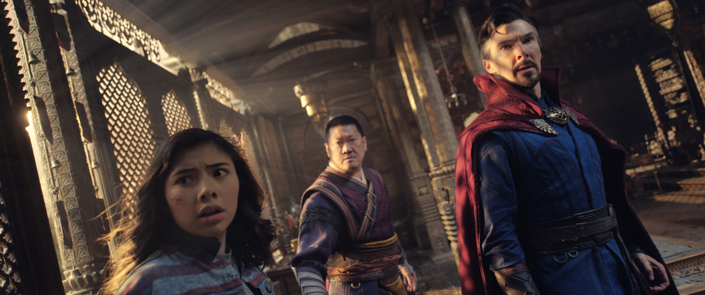
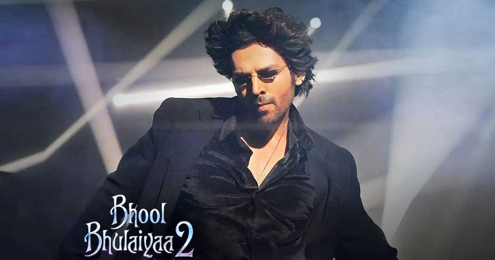
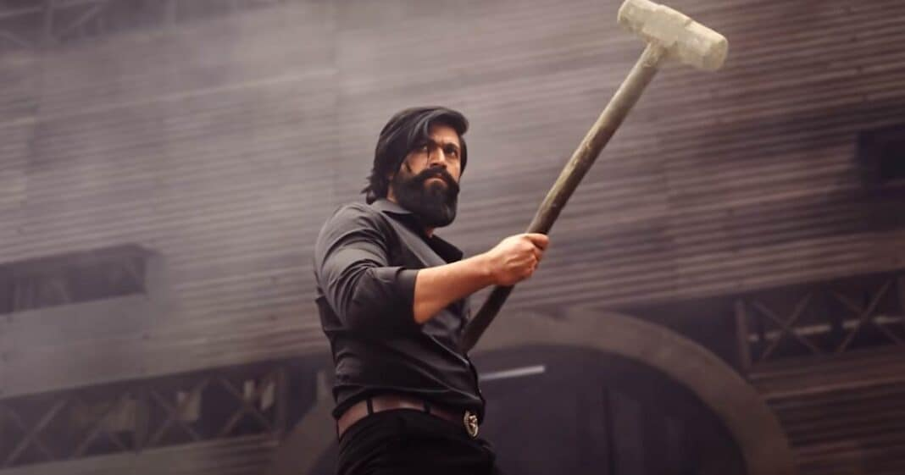

Entertainment
Doctor Strange In The Multiverse Of Madness Box Office Day 13 (India): All Set To Get Premium High-Priced Screens In Week 3 Too
This is what has allowed the Marvel film also to collect 121.01 crores* already till Wednesday.
Despite the release of Bhool Bhulaiyaa 2 and Dhaakad, one film that will continue to get moolah in Week 3 as well is Doctor Strange in the Multiverse of Madness. Reason? None of the new releases need IMAX, 4DX or 3D formats for them, which means despite limited occupancy, the Hollywood superhero film will have all these screens at its disposal. It is a blessing indeed for the film to be playing on such formats since these all play at premium multiplexes and the ticket prices too are at the top of the range.
As a result, even with half the occupancy, Doctor Strange will collect as much as any other film which is playing on other screens since the ticket rates here are almost one and a half times. For example, even at a major multiplex in a big city mall, average ticket price of a Bollywood biggie could be in a range of Rs. 350-500/–. However, an IMAX, 4DX or 3D screen may have an average entry price ranging from Rs. 500 to Rs. 750/-. On certain days and shows, the price may go further up, so it only ends up helping the collections turn out to be better.
This is what has allowed the Marvel film also to collect 121.01 crores* already till Wednesday, with more coming in before the close of week. Then its Week 3 is going to be an added bonus due to reasons, as stated above. As a result, Doctor Strange is now looking at 135-140 crores finish, which would be a very good result, especially in the current times when even 50 crores lifetime is coming at a premium.
Bhool Bhulaiyaa 2 Box Office: Kartik Aaryan Led Horror-Comedy Might Clock The Second Best Day 1 For Bollywood Post-Pandemic
All eyes are set on Kartik Aaryan led Bhool Bhulaiyaa 2 to completely take down the pandemic hangover
It’s the 5th month of 2022 but the feel-good factor is yet to revive Bollywood. Gangubai Kathiawadi and The Kashmir Files did bring some hopes, but since then, it’s been a dry phase at the box office. Now, all eyes are set on Kartik Aaryan led Bhool Bhulaiyaa 2 to completely take down the pandemic hangover.
Be it social media negativity or the hype of South films taking over, Bollywood is witnessing a tough time at the box office. If we see recent releases like Jersey, Runway 34, Heropanti 2 and Jayeshbhai Jordaar, it feels like the industry is yet to bounce back fully post the pandemic’s slaughter.
Speaking of this week’s big release Bhool Bhulaiyaa 2, the film is horror-comedy and is looking to take a double-digit start at the box office. If we talk about the advance booking, ticket sales might touch the mark of 5 crores by today night. Again tomorrow, good current bookings will do the trick, which might help BB 2 to become one of the best day 1s for Bollywood. In fact, Bhool Bhulaiyaa 2 has a strong chance of beating Gangubai Kathiawadi and grabbing the second spot.
Have a look at the top Bollywood openers post-pandemic (note: here we have included films released in 2022 as releases like 83 which arrived in December 2021 still had a Covid’s fear factor acting strongly among the audience):
Bachchhan Paandey – 13.25 crores
Gangubai Kathiawadi – 10.50 crores
Heropanti 2 – 7 crores
Jersey – 4 crores
The Kashmir Files – 3.55 crores
Let’s see where Bhool Bhulaiyaa 2 will make its place tomorrow!
Helmed by Anees Bazmee, BB 2 stars Kartik Aaryan, Kiara Advani, Tabu and others. It is clashing with Kangana Ranaut’s Dhaakad.
KGF Chapter 2 Box Office (Worldwide): Yash’s Monster Is Steps Away From Joining The Elite Club Of 1000 Crores!
Starring Yash in the lead, the film has done exceptionally well again during its second weekend
Prashanth Neel has successfully created a box office destroyer with his vision in KGF Chapter 2, and it’s hard to guess where the film will stop its journey. Starring Yash in the lead, the film has done exceptionally well again during its second weekend on the worldwide front.
KGF Chapter 1 enjoyed tremendous popularity globally thanks to its success on OTT and was highly anticipated by the audience. The craze is getting translated to numbers as a big collection is being contributed from international circuits. As a result, the film is doing record-breaking business.
As per trade Comscore, KGF Chapter 2 has done a terrific business by picking up during the second weekend. Its worldwide collection as of now stands at a huge 880.45 crores ($114.93 million). As we can see, the film is just 20 crores away from hitting the 900 crore mark and 120 crores away from joining the elite club of 1000 crores led by Dangal, Baahubali 2: The Conclusion and RRR.
Game Of Thrones: Makers Sued With 38 Crores Suit Over An Accident That Left Stunt Performer In “Trauma & Depression”
HBO Max's super-hit show will be marking the third anniversary of GOT's finale The Iron Throne on the 19th of May.
Game of Thrones’ makers are being sued years after the series ended. HBO Max’s super-hit show will be marking the third anniversary of GOT’s finale The Iron Throne on the 19th of May. The ending received a lot of criticism for several reasons, like being too dark, the story being too rushed which left many unanswered questions, and a lot more.
Other than the messy ending, the series has broken some major records throughout its years of airing. It once had the biggest budget of $15 million per episode, massing viewership ratings with reportedly 16.5 million people watching the 7th season and 15 million turning in after and a lot more.
So why, despite all the acclaim, is Game of Thrones being sued years after it ended? As per Variety, Casey Michaels, a stunt performer who worked on the final three seasons of the series is suing the people who made the show. Michaels has reportedly filed a $5 million (Rs. 38 crores) claim against Fire & Blood Productions, an HBO-owned U.K. subsidiary.
The reason behind this is that the stunt person claims she was injured in February 2018 during the filming of the Battle of Winterfell sequence — in the Game of Thrones’ final season’s third episode, “The Long Night.” Casey Michaels said she suffered a “serious fracture dislocation to her left ankle.”
Casey also claimed that has undergone multiple surgeries on her foot ever since her injury on set. The court documents stated that she has lost range of motion in her foot and faces difficulty with basic, everyday functions, which has led to trauma and depression. The stunt performer also alleged that the GOT makers didn’t provide enough safety measures during the stunt scenes.
Though the Game of Thrones makers hasn’t denied Casey Michael’s injury, they have denied having inadequate safety measures and have said that she was hurt by “failure to execute the pleading stunt properly.”